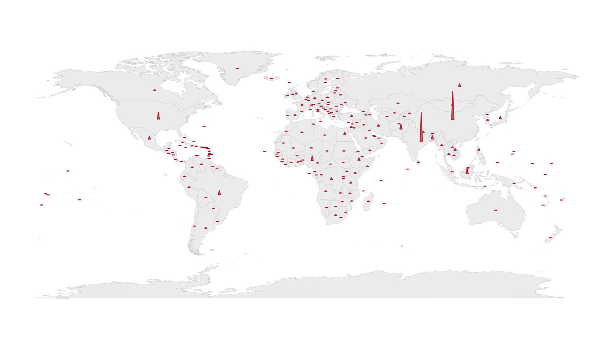
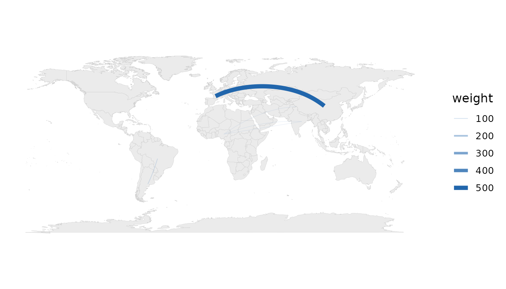
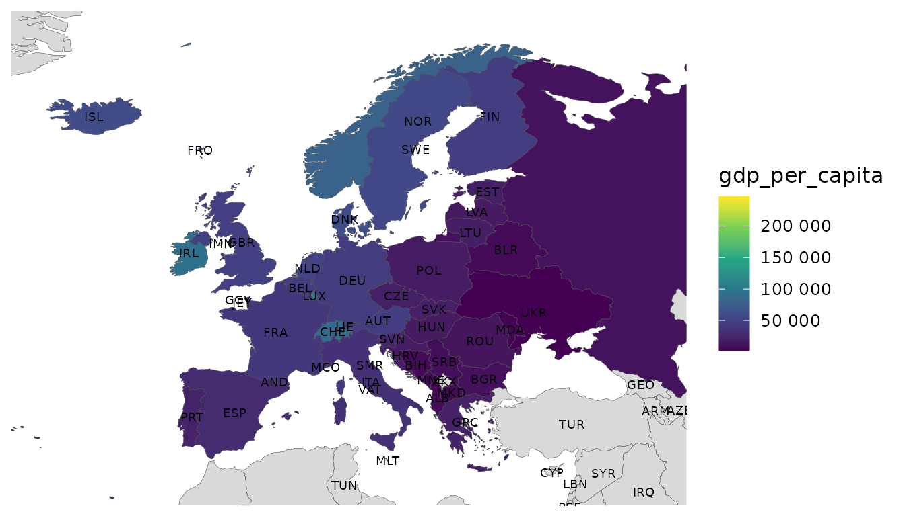

“World data on a map” has many honest forms. A choropleth is only the first. The package offers a full vocabulary; this vignette tours the ones that run without extra dependencies and points to the rest.
Proportional-symbol (bubble) maps
For totals, a choropleth misleads: large values hide in small countries. Sized circles at centroids are the right idiom.
bubble_map(snap, population)
Equal-area tile grids
Give every country the same visual weight so micro-states are visible.
tile_map(snap, gdp_per_capita)
Flow maps
Great-circle arcs between country pairs from an origin–destination table.
od <- data.frame(
from = c("China", "Germany", "Brazil", "Nigeria"),
to = c("United States", "France", "Argentina", "India"),
weight = c(500, 200, 90, 60)
)
flow_map(od, from, to, weight)
Labels
Centroid-anchored labels (names, ISO codes or flag emoji), with
ggrepel collision avoidance when available.
mapdf <- attach_geometry(
dplyr::filter(snap, continent == "Europe"), geometry = "polygon"
)
world_map(mapdf, gdp_per_capita) +
geom_country_labels(repel = FALSE, size = 2.5) +
ggplot2::coord_cartesian(xlim = c(-25, 45), ylim = c(34, 72))
Maps that need optional packages
The remaining displays follow the same one-call pattern but require optional packages, so they are shown here as code:
# Bivariate choropleth (two variables at once) — needs `biscale` + `sf`
world_data(2020, c(gdp = "NY.GDP.PCAP.KD", life = "SP.DYN.LE00.IN"),
geometry = "sf") |>
bivariate_map(gdp, life)
# Area-honest cartogram — needs `cartogram` + `sf`
world_data(2020, c(pop = "SP.POP.TOTL"), geometry = "sf") |>
cartogram_map(pop, type = "dorling")
# Animated choropleth over a year panel — needs `gganimate`
world_data(2000:2020, c(gdp = "NY.GDP.PCAP.KD")) |>
animate_world(gdp)
# Interactive choropleth — needs `leaflet`, `ggiraph` or `plotly`
world_data(2020) |>
interactive_map(gdp_per_capita, engine = "plotly")Each degrades gracefully: if the optional package is missing you get
a clear, actionable message (and animate_world() falls back
to a faceted small-multiple).